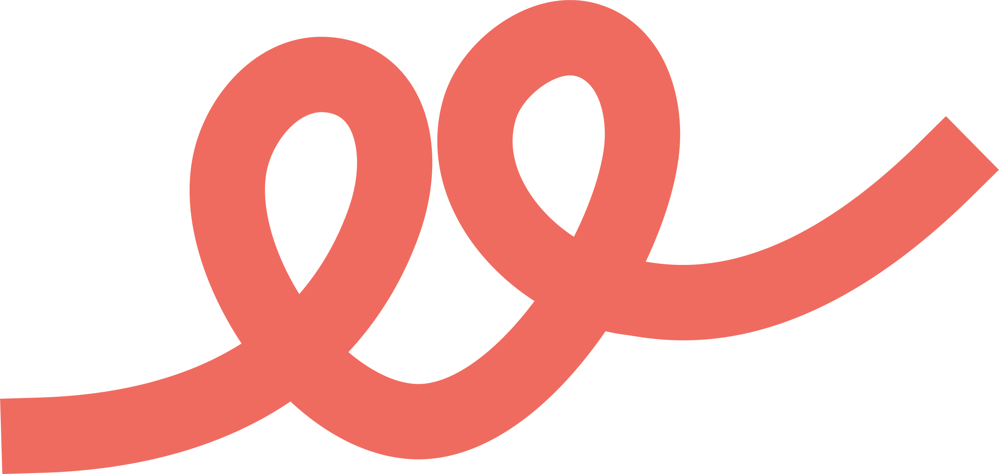

A Feel não é uma plataforma de creator. É infraestrutura de confiança.
A hipótese amadureceu. Não é "mais uma plataforma para creators" — é a camada de reputação, confiança e coordenação de um mercado inteiro: varejo, profissionais da indústria criativa, creators e marcas. O espaço físico no shopping não é o produto; é o catalisador que dá liquidez e confiança iniciais a essa rede.
Coerente com o princípio-raiz: a Feel revela valor que já existe — não o cria. A reputação criativa já existe; o que falta é infraestrutura para torná-la verificável, portável e contável.
"Se a Feel der muito certo, o que passa a existir no mercado que hoje simplesmente não existe?"
Resposta na seção 09. Ela orienta produto, narrativa e roadmap melhor do que qualquer lista de features.
Contratar criatividade é apostar às cegas.
O mercado da comunicação e da influência funciona por indicação e círculo fechado. Não há como provar competência sem depender de quem te conhece — e não há como contratar com confiança sem correr risco. O valor real é invisível; a decisão é opaca dos dois lados.
O profissional sem rede (fotógrafo, filmmaker, designer, social, creator em ascensão) e o varejista local que precisa contratar e não sabe em quem confiar. Ambos pagam o custo da opacidade.
O mercado é fragmentado e a prova é auto-declarada (mediakit em PDF, print de depoimento). Ninguém possui a camada de confiança: redes sociais organizam audiência, freelancer sites organizam preço — nenhum organiza reputação aplicada ao trabalho.
É um problema de custo de coordenação e assimetria de informação: encontrar, avaliar e confiar custa caro demais. Reduzir esse custo é o gargalo que a Feel ataca.
Antes de defender: tentar destruir.
Uma tese só vale quando sobrevive à tentativa de derrubá-la. As premissas frágeis, os riscos ocultos — e o que fica de pé.
Rede de dois lados morre sem massa crítica. Mitigação: o espaço físico e uma praça única (Recife/Patteo) criam densidade local antes de escalar — liquidez por geografia, não por marketing nacional.
Se a reputação for auto-declarada, vira mais um mediakit. Mitigação: dupla assinatura (marca co-assina) + dados na fonte (OAuth carimbado). Sem isso, não há tese.
Fechado o 1º trabalho, as partes saem da plataforma. Mitigação: o valor está no acúmulo — o lastro só cresce dentro da Feel; sair é perder o histórico verificável.
"Hub", "marketplace", "clube" — cada rótulo atrai o concorrente errado. Mitigação: nomear e possuir a categoria (seção 06).
O que sobrevive ao teste: a camada de confiança verificável + o catalisador físico. O que deve ser abandonado por ora: virar inbox/CRM, IA de conteúdo e ambição nacional precoce (seção 04).
O que sobra quando copiam a ideia.
Um endereço no shopping gera confiança e densidade local que nenhum concorrente puramente digital replica. Presença é moat.
Rastro verificável que só engorda com o tempo e é portável para o profissional. Quanto maior, mais caro de reconstruir em outro lugar.
Reputação testemunhada pela marca, não alegada. O dado de confiança é proprietário e cresce por transação.
Efeitos de rede locais: cada pro, varejista e marca a mais torna o match melhor. Densidade por praça vira barreira.
Primeiro a confiança. Depois a coordenação.
A camada de confiança: lastro + prova de dupla assinatura + dados na fonte. Wedge por praça, ativado pelo espaço físico. É o FeelWorks (Fase A).
Matching varejo↔profissional sobre a confiança já estabelecida: oportunidades, tickets, contratação de baixo risco. Só depois que o lastro tem massa.
Inbox/CRM de e-mail, IA de conteúdo, automação pesada, marketplace nacional e monetização precoce. Cada um dilui o foco na camada de confiança. Ficam para depois do PMF.
Detalhe operacional do produto no FeelWorks · Estratégia. Ativação física no FeelMakers.
O que provaria que funciona.
com ≥ 1 prova de dupla assinatura — a métrica que separa vitrine de infraestrutura.
varejo→profissional: quem contrata uma vez volta a contratar pela Feel.
a 1ª contratação de um profissional novo — velocidade de confiança.
de rede por praça — nº de pros/varejistas/marcas ativos no mesmo raio.
Não competir numa categoria. Criar uma.
Se a Feel se chamar "plataforma de creator", compete com TikTok. "Agência", com agências. "Marketplace", com Fiverr. Todas guerras de preço e alcance. A saída é nomear e possuir um espaço vazio:
Infraestrutura de reputação verificável para a economia criativa.
Nomear o problema (a reputação não-verificável) é possuir a resposta. Quem cria a categoria define as regras.
Dois jobs: "prove que sou confiável sem depender de indicação" e "encontre alguém em quem eu possa confiar".
Sai da disputa por preço e alcance para um eixo novo: confiança verificável — onde ninguém compete ainda.
Uma tese. Cinco públicos. Cinco frases.
Não é mais uma loja — é uma âncora de nova categoria que ativa a economia criativa local e traz fluxo qualificado que o mall não consegue gerar sozinho.
A camada de confiança de um mercado grande, fragmentado e sem infraestrutura — com moat físico, dado verificável proprietário e efeitos de rede locais.
Sua reputação vira um rastro contável que você leva com você — não um mediakit que envelhece.
Prove competência sem depender de indicação. O trabalho fala, e fica registrado.
Contrate quem tem prova, não quem tem lábia. Reduza o risco de cada real investido em comunicação.
Como a confiança circula.
A reputação sobe da oferta; a confiança e a oportunidade descem para a demanda; as provas circulam e se acumulam. O espaço físico é o catalisador que dá a partida.
Fotógrafos, filmmakers, designers, social, estrategistas, creators. Geram reputação.
Verifica, carimba, acumula e conecta. Transforma reputação em confiança contável.
Contratam com risco reduzido. Devolvem provas co-assinadas ao sistema.
O que passa a existir que hoje não existe.
Um registro público e verificável de reputação profissional criativa — um lastro portável que hoje simplesmente não existe. Contratar deixa de depender de quem você conhece. A confiança vira infraestrutura, não sorte.
É essa transformação — não a soma de features — que orienta o produto, o posicionamento e a narrativa. Tudo o mais deriva daqui.
 TESE ESTRATÉGICA · V1 · SEGUE A FEEL
TESE ESTRATÉGICA · V1 · SEGUE A FEEL